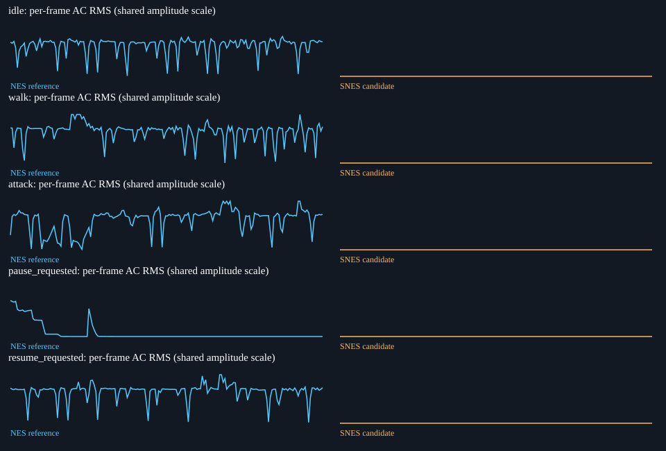
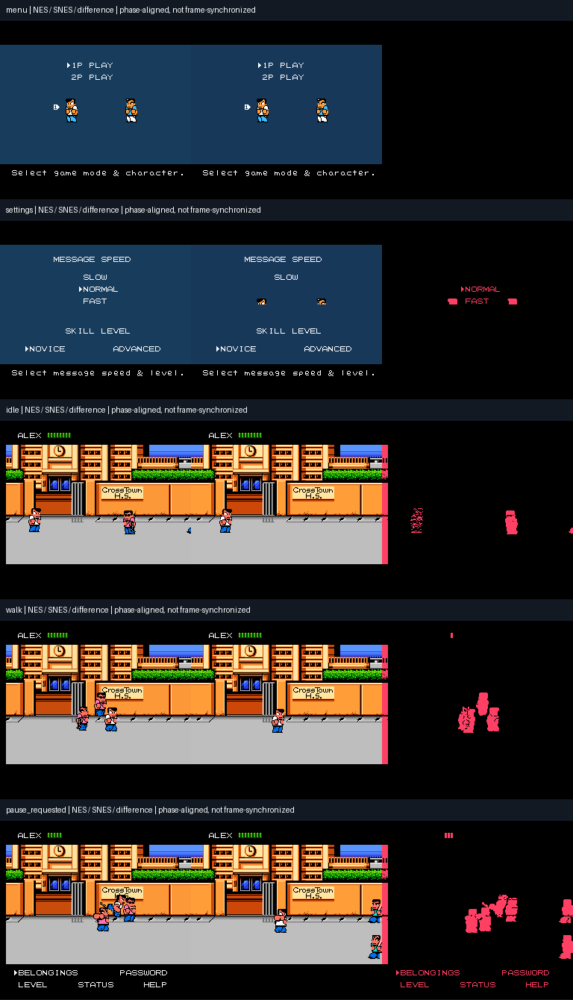

Phase-driven equivalent actions, NOT cycle/frame-synchronized gameplay. Captured screenshots are real execution. Audio presence is not audio fidelity; requested pause is not proof that the game entered pause. Full-speed gameplay and physical audio remain unverified.
Audio playback requires the local audit bundle. ROMs and recorded game audio are deliberately omitted from the GitHub summary.
Candidate: 2098a778f32cadfa886a6dafc59e6f9303342ba9d55d70ed6135bb12402ab4ca
| transition:boot_to_menu | FAIL |
| transition:wait_settings | FAIL |
| transition:wait_story | FAIL |
| transition:wait_street | FAIL |
| audio_presence:idle | FAIL |
| audio_presence:walk | FAIL |
| audio_presence:attack | FAIL |
| audio_presence:resume_requested | FAIL |
| all_phases_reached | PASS |
| input_delivery | PASS |
| adapter_faults | PASS |
| same_video_rate | PASS |
| continuous_audio_callbacks | PASS |
| settings_pixels | FAIL |
| pause_tail_noise | UNVERIFIED |
| original_speed_full_gameplay | UNVERIFIED |
| music_and_sfx_fidelity | UNVERIFIED |
| physical_hardware_audio | UNVERIFIED |


No automatic pass replaces listening. Notes apply only to evidence c6f33d964372d869c8a5716acc05b31b84edc72de08b5cd975bd1fe5f5edf17a.